2026
Environmental Epidemiology
Air pollution, child health & spatial data science in Sub-Saharan Africa.
I hold an MPhil in Epidemiology from the Biomedical Sciences Department at the University of Cape Coast, where I worked under the DICE Project within the NIH DS-I Africa consortium led by Prof. Kofi Amegah. My work sits at the intersection of environmental epidemiology, spatial statistics, and child health in Sub-Saharan Africa.
Within the DICE Project, I contribute to research examining the spatial variability in the health impacts of ambient PM2.5 exposure across SSA, including the modifying roles of neighbourhood greenness and nutrition. I am also involved in developing multi-temporal exposure models by integrating land use regression approaches with ground and mobile monitoring data.
Methodologically, I apply machine learning-based Land Use Regression models and Bayesian spatial techniques to investigate how air pollution influences child undernutrition and respiratory outcomes. On the applied side, I lead data management and support sensor network operations for the GhanaAQ and Breathe Accra projects, which monitor urban air quality across 13 districts in Greater Accra.
In the Media
Featured Documentary
Toxic Smoke, Fragile Lives
A documentary by Christian Yalley
I was featured as Data Manager for Breathe Accra, speaking about what our sensor network has revealed about air pollution in Greater Accra, especially around Agbogbloshie, and why denser monitoring is needed to inform air quality policy.
Watch on YouTube →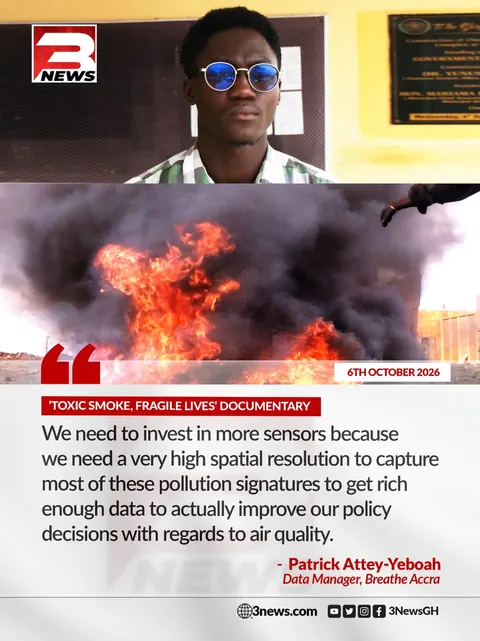
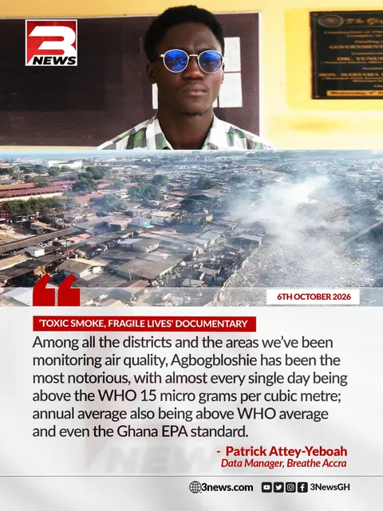
Academic Output
Publications
* denotes first or co-first author.
2026
Environmental Research
Spatial variability in the association of ambient PM2.5 exposure with acute respiratory infection among children in Sub-Saharan Africa
2025
Environment International
Spatial variability in the association of ambient PM2.5 exposure with child undernutrition in sub-Saharan Africa
2025
Environmental Science: Atmospheres
Utility of low-cost sensor measurement for predicting ambient PM2.5 concentrations: evidence from a monitoring network in Accra, Ghana
Posters, Presentations & Webinars
Talks
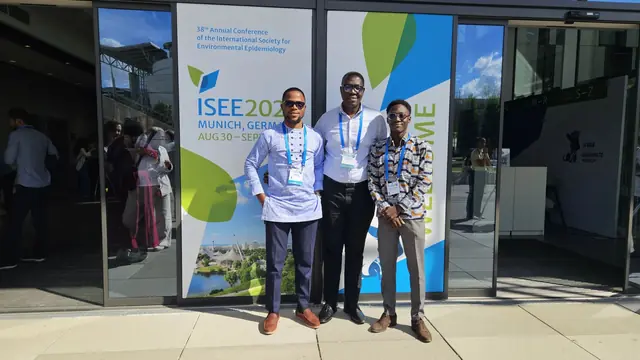
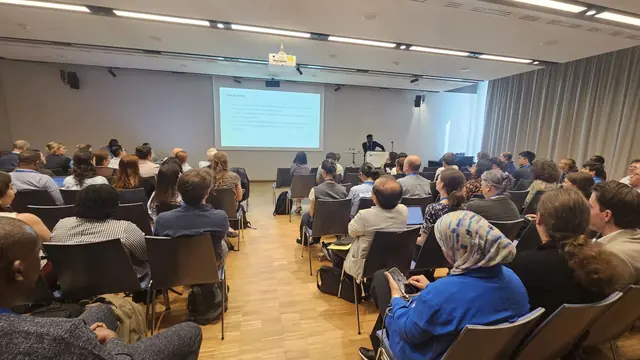
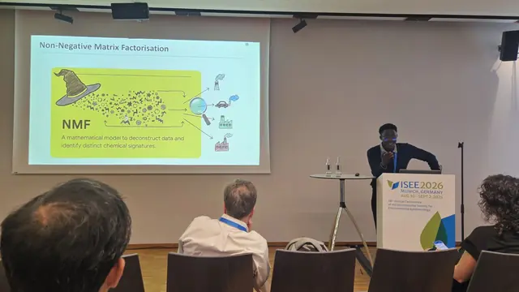
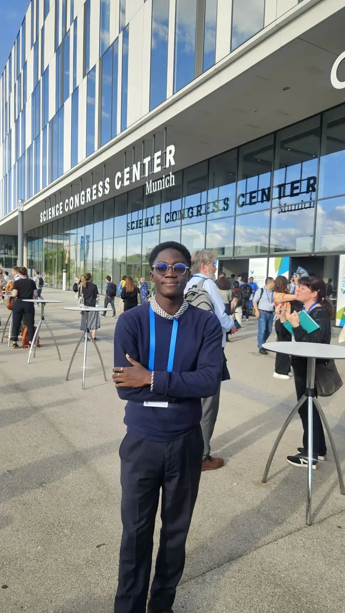
Four presentations at the ISEE Annual Conference
- Symposium (S15): Utility of low-cost sensor measurement for prediction of air pollution concentrations and source apportionment — evidence from the Breathe Accra Project.
- Poster Discussion: Spatial variability in ambient PM2.5–child undernutrition effects in Sub-Saharan Africa: the moderating role of green spaces.
- Flash Talk (on behalf of Kelvin Yeboah): Consumption of antioxidant-rich foods attenuates respiratory and cardiovascular health effects in a population highly exposed to air pollution.
- Flash Talk (on behalf of Paul Adjorlolo): Spatial variability in ambient PM2.5–childhood respiratory infection in Sub-Saharan Africa: the moderating role of green space.
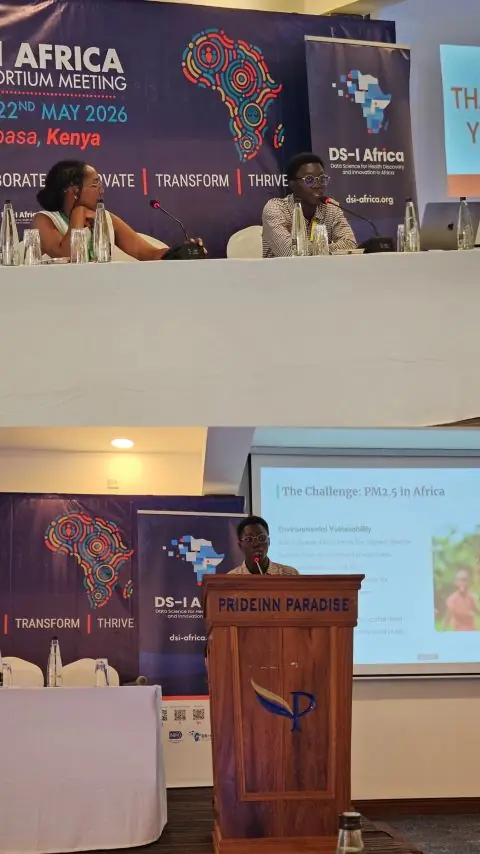
Data Science for Maternal, Child & Environmental Health
Co-presented the DICE GhanaAQ App and presented a poster on spatial variability in PM2.5 exposure effects on child undernutrition.
View poster (PDF) →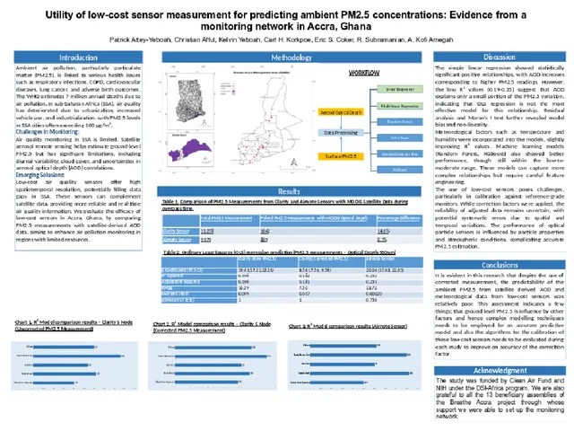
Utility of low-cost sensor measurement for predicting ambient PM2.5
Focused on calibration of low-cost sensors using ML to bridge data gaps in African urban environments.
Read publication →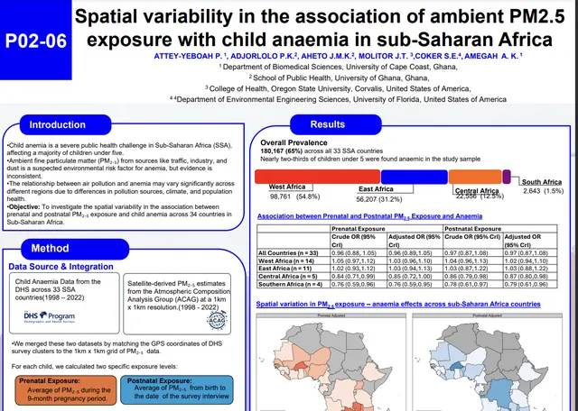
Spatial variability of ambient PM2.5 and child anemia in SSA
Integrated satellite-derived PM2.5 data with DHS survey results to identify critical spatial variations in health risk.
Slides →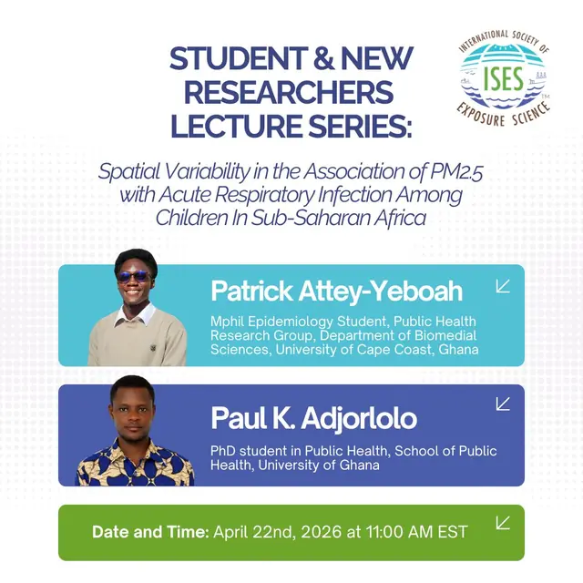
Spatial variability in association of PM2.5 with acute respiratory infection
Presented as part of the ISES Student & New Researchers Lecture Series.
LinkedIn post →Methodology
Research & Skills
Air quality monitoring & source apportionment
Developing high-resolution exposure models using low-cost sensors and ML algorithms (Random Forest, Gradient Boosting) across data-sparse African environments. Applies receptor-based source apportionment to characterise pollution sources for policy.
Spatial epidemiology & child health
Applying Bayesian hierarchical spatial models (BYM/BYM2 via R-INLA) to map disease risk across SSA. Works extensively with DHS data to quantify PM2.5 links to childhood stunting, wasting, anemia, and respiratory outcomes.
Statistical programming & GIS
Primarily R (INLA, spdep, tidyverse, sf, Shiny) and Python for ML pipelines and API integrations. Integrates satellite data (ACAG PM2.5, ERA5) with ground sensors via GIS for large-scale exposure assessment.
Featured Work
Tools & Software
Clarity Node-S QC Dashboard
The problem
Managing high-frequency sensor data across 13 districts required manual, error-prone data cleaning and device health tracking.
The solution
An interactive dashboard that fetches data via the Clarity API, applies custom QC algorithms, and maps device health spatially.
The outcome
Automated maintenance reporting, cutting QA/QC time by over 60% and ensuring data integrity for researchers.
svyexpo Work in progress
The problem
Linking survey data such as DHS to environmental exposures requires assigning exposure around each survey location and over the right time windows, which is repeated work in every project.
The approach
An R package for exposure assignment and assessment. You supply your own survey data and rasters, boundaries come from the public GADM database, and exposure is assigned within user-defined buffers.
Where it stands
Under active development. The current scope covers prenatal, postnatal and cumulative exposure windows. Spatial modelling will be added later.
Track Record
Experience
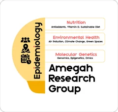
Research Assistant
Amegah Research Group (UCC) · DICE Project
Spatial epidemiology of PM2.5 and child health outcomes, multi-temporal LUR model development, and data harmonisation across SSA DHS datasets.
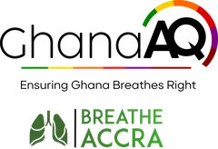
Data Manager
Ghana Urban Air Quality & Breathe Accra
Leading cleaning, validation, and spatial integration of high-frequency data from a network of Clarity Node-S sensors. Built QC pipelines and dashboards.
Academic Journey
Education
MPhil Epidemiology
University of Cape Coast, Ghana
Thesis: Spatial variability in the association of ambient PM2.5 exposure with child undernutrition in sub-Saharan Africa.
BSc Biomedical Sciences
University of Cape Coast, Ghana
Foundational training providing the biomedical grounding that underpins my approach to environmental health research.
Get in Touch
Let's collaborate
I am actively seeking opportunities for research collaborations, webinars, and data science projects in environmental health — open to collaborations and talks.